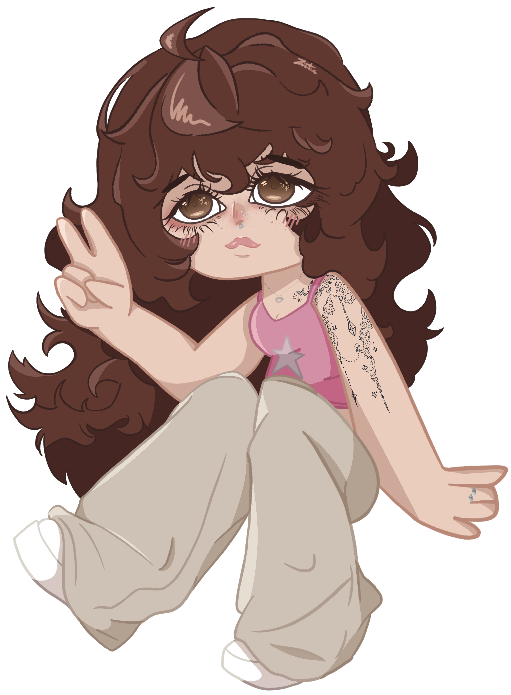
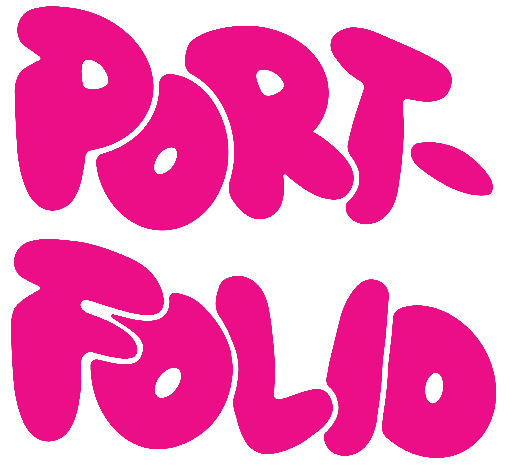
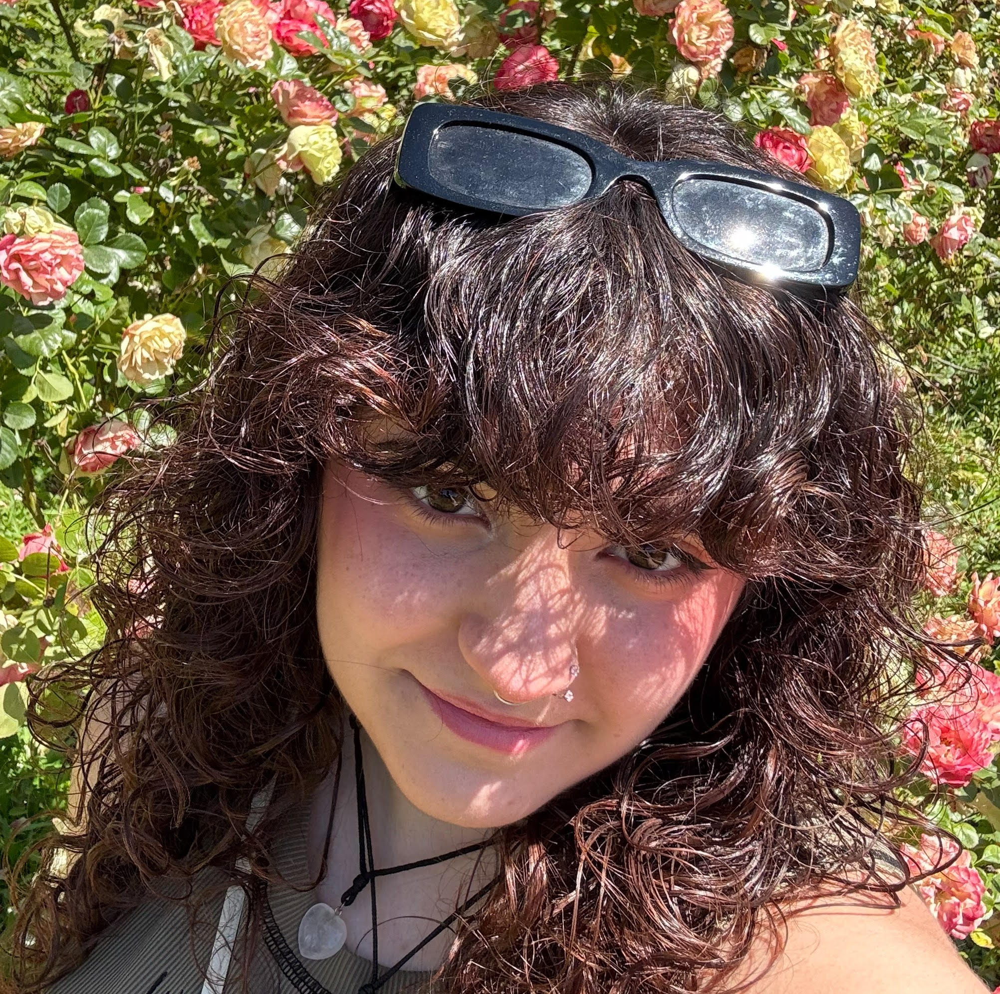
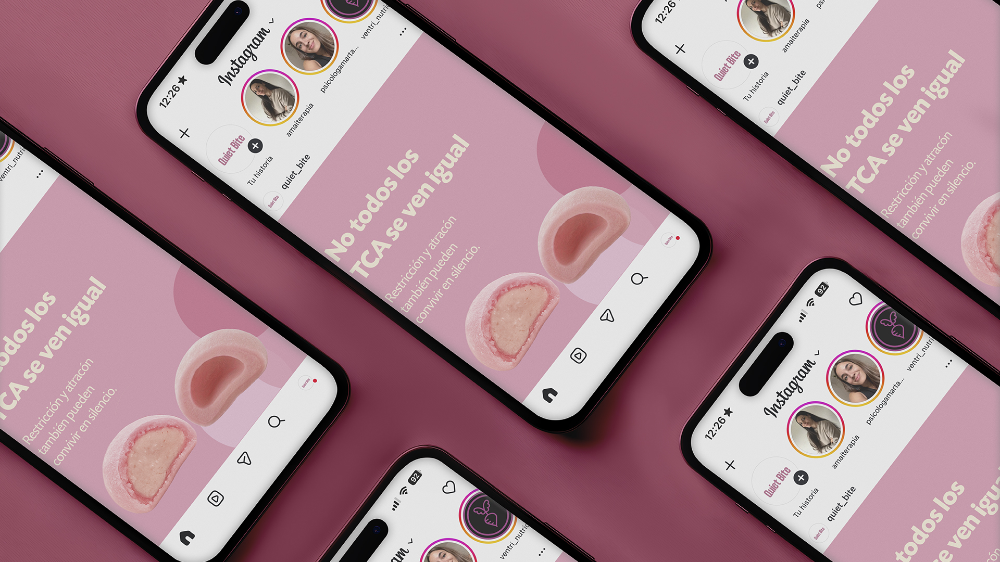
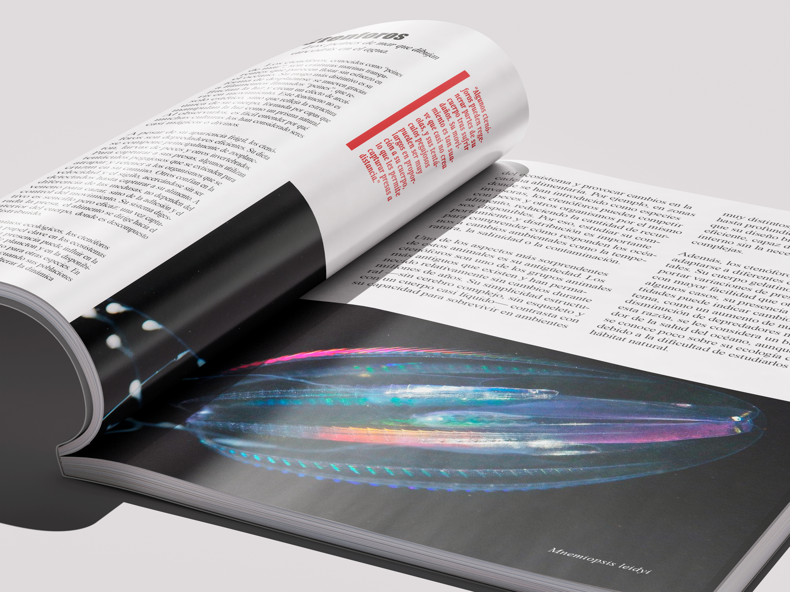
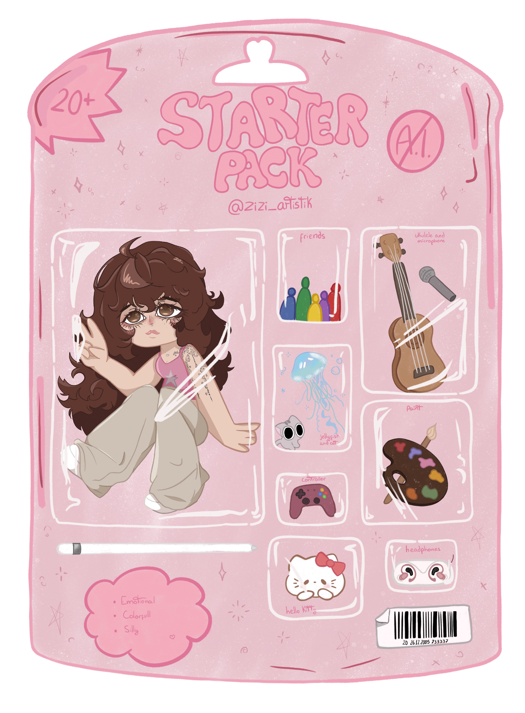

CONOCEME
SOBRE MI

Para mí, el diseño es mucho más que crear algo bonito: es una forma de expresar ideas, emociones y mensajes a través de lo visual.
Me gusta crear diseños que tengan un propósito, que comuniquen y que sean capaces de conectar con quien los observa. Mi forma de diseñar nace de la curiosidad, la sensibilidad y una manera muy personal de entender el mundo.
Desde que descubrí el diseño gráfico, he explorado diferentes técnicas y formas de expresión, siempre buscando nuevas maneras de transformar una idea en algo visual, cercano y con significado.
Ahora quiero seguir creciendo como diseñadora, experimentar, aprender y trabajar en proyectos que me permitan comunicar, conectar y convertir ideas en algo que realmente llegue a las personas.
Programas
Habilidades
Trabajo en equipo
Liderazgo
Mentorización
Adaptabilidad
Creatividad
Innovación
Proyectos
BRANDING
Una selección de proyectos de branding donde las ideas se transforman en identidades visuales únicas, con personalidad, intención y una historia propia.

MAQUETACIÓN
Una selección de proyectos de maquetación donde el diseño y la composición se unen para crear piezas visuales claras, equilibradas y con una identidad visual cuidada.

ILUSTRACIÓN
Una selección de proyectos de ilustración donde la creatividad y la expresión visual se unen para dar forma a ideas, conceptos y pequeñas historias a través del dibujo.
